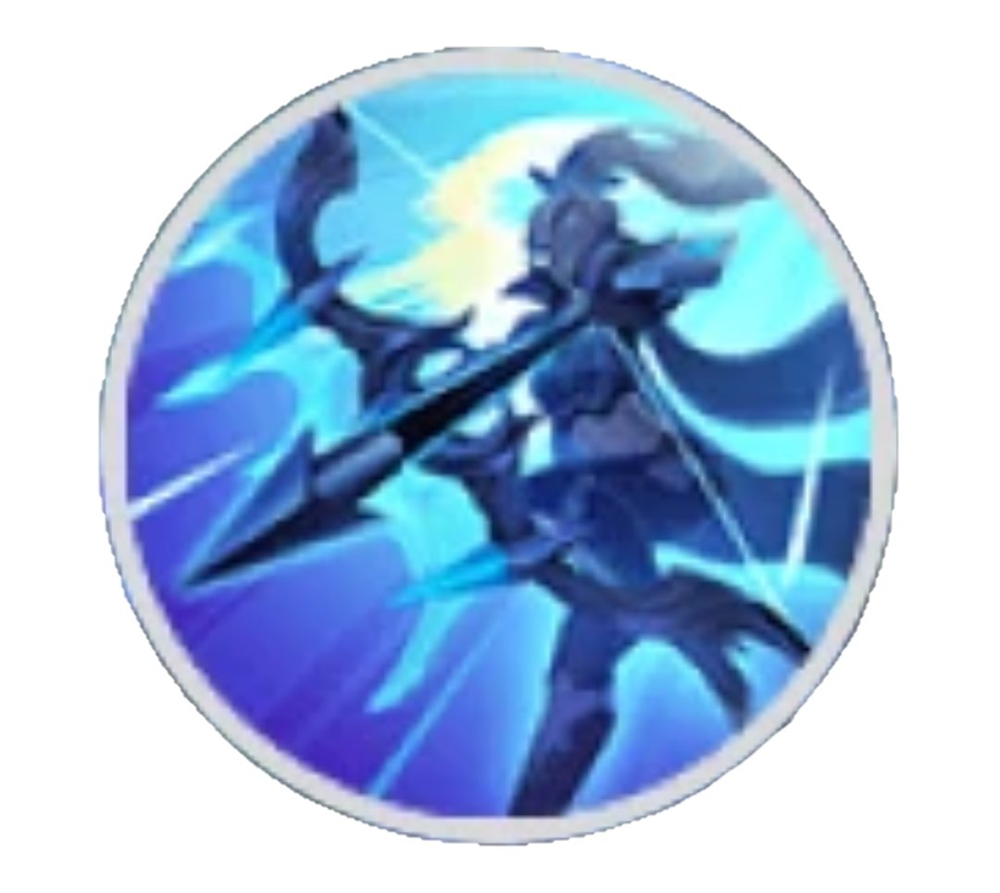
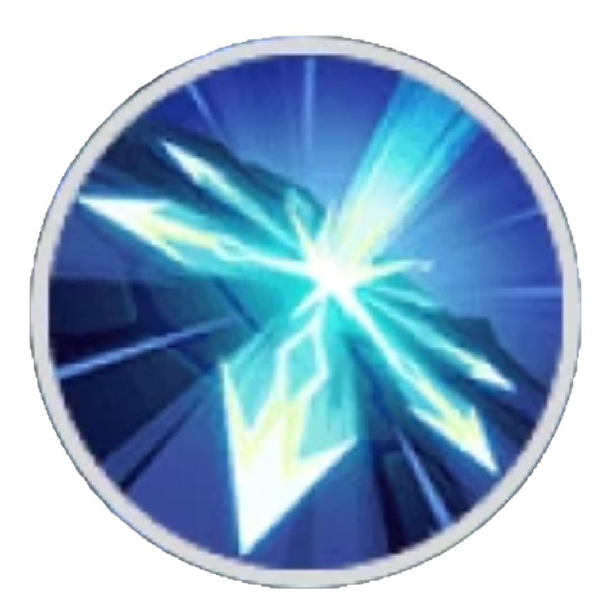
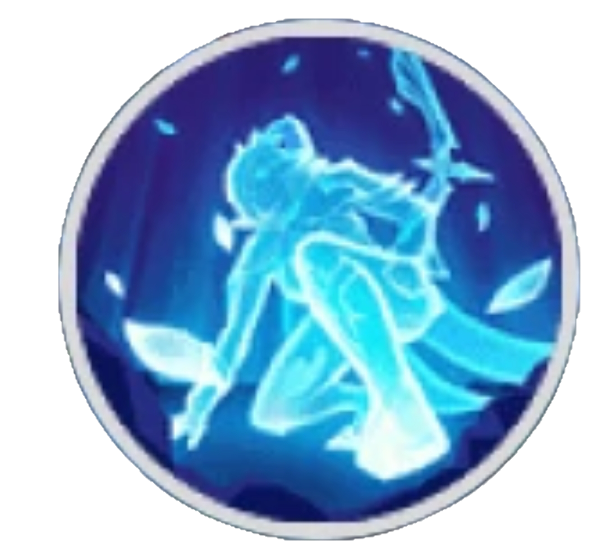

Miya
Marksman / Late Game CarryMiya is a late-game marksman who becomes extremely powerful once fully built. She relies on attack speed and positioning to deal massive sustained damage.
Miya is a late-game marksman who becomes extremely powerful once fully built. She relies on attack speed and positioning to deal massive sustained damage.

Basic attacks increase attack speed. At full stacks, she deals extra arrow damage.
Splits basic attacks into multiple arrows, allowing Miya to hit multiple enemies.

Fires an arrow that slows and helps control enemies.

Becomes invisible, gains movement speed, and removes debuffs for escape or repositioning.
• Very strong late game damage
• High attack speed scaling
• Can hit multiple enemies
• Strong tower pushing
• Weak early game
• No dash skill
• Easily targeted by assassins
• Requires items to be effective
Swift Boots → Corrosion Scythe → Demon Hunter Sword → Golden Staff → Wind of Nature → Malefic Roar
• Focus on farming early game
• Stay behind your tank in fights
• Use ultimate to reposition
• Don’t fight without items